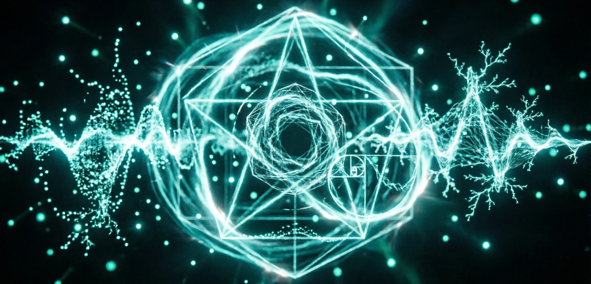

Нейроакустика: на стыке физики, биологии и сознания
Нейроакустика — это междисциплинарная область науки, изучающая взаимодействие между звуковыми волнами и нервной системой человека. Возникшая на пересечении психоакустики, нейробиологии и когнитивной науки, она исследует не просто то, как мы слышим звук, но и то, как акустические сигналы трансформируют работу мозга, влияют на эмоциональное состояние и физиологические процессы. В контексте звукотерапии нейроакустика предоставляет научное обоснование тем эффектам, которые тысячелетиями использовались в целительских практиках различных культур.
Современные методы нейровизуализации — функциональная магнитно-резонансная томография (фМРТ), электроэнцефалография (ЭЭГ), позитронно-эмиссионная томография (ПЭТ) — позволили учёным заглянуть внутрь работающего мозга и увидеть, как различные звуковые стимулы активируют или подавляют активность конкретных нейронных сетей. Эти исследования превратили звукотерапию из области эмпирических наблюдений в научно обоснованную дисциплину с измеряемыми параметрами и предсказуемыми результатами.
Физические основы: от звуковой волны к нейронному отклику
Звук представляет собой механическую волну, распространяющуюся в упругой среде. Когда эта волна достигает человеческого уха, она проходит через сложную систему преобразований: от колебаний барабанной перепонки через систему слуховых косточек к жидкости внутреннего уха, где механические колебания преобразуются в электрические сигналы волосковыми клетками улитки. Эти сигналы по слуховому нерву поступают в ствол мозга, затем в таламус и, наконец, в слуховую кору височных долей.
Однако путь звука в мозге не ограничивается слуховой корой. Исследования показывают, что акустические стимулы активируют лимбическую систему — древние структуры мозга, отвечающие за эмоции и память, включая миндалевидное тело (амигдалу), гиппокамп и поясную извилину. Именно поэтому определённые звуки способны вызывать сильные эмоциональные реакции, воспоминания или чувство глубокого покоя. Кроме того, низкочастотные вибрации воздействуют на тело через костную проводимость, стимулируя механорецепторы в коже, мышцах и внутренних органах, что создаёт эффект соматического резонанса.
Захват частоты: синхронизация мозговых волн с внешним ритмом
Одним из фундаментальных механизмов, лежащих в основе звукотерапии, является явление захвата частоты (frequency following response, FFR). Этот феномен заключается в способности мозга синхронизировать свою электрическую активность с ритмом внешнего акустического стимула. Когда человек слышит монотонный ритм с определённой частотой, нейронные сети начинают подстраивать свои колебания под этот внешний паттерн.
Мозг генерирует различные типы волн в зависимости от состояния сознания: бета-волны (13–30 Гц) связаны с активным бодрствованием и аналитическим мышлением; альфа-волны (8–12 Гц) — с расслабленным бодрствованием и спокойным состоянием; тета-волны (4–7 Гц) — с глубокой медитацией, творческим состоянием и фазой быстрого сна; дельта-волны (0,5–4 Гц) — с глубоким сном без сновидений. Подавая звуковые стимулы с частотой, соответствующей желаемому диапазону мозговых волн, можно целенаправленно индуцировать определённые состояния сознания. Например, ритмы в диапазоне 4–7 Гц, как в шаманском барабанении, способствуют переходу в тета-состояние, характерное для глубокой медитации и трансовых практик.
Резонанс и когерентность: гармонизация нейронных сетей
Помимо захвата частоты, звукотерапия использует принципы резонанса и когерентности. Резонанс возникает, когда частота внешнего звукового стимула совпадает с собственной частотой колебаний определённой структуры мозга или тела. Это приводит к усилению колебаний и более эффективной передаче энергии. Например, низкочастотные звуки (40–150 Гц) резонируют с тканями тела, улучшая микроциркуляцию крови и лимфы, снижая мышечное напряжение и стимулируя выработку оксида азота — важной сигнальной молекулы, расширяющей кровеносные сосуды.
Когерентность относится к синхронизации активности различных областей мозга. Исследования показывают, что определённые звуковые паттерны, особенно гармонически богатые звуки поющих чаш, гонгов или колоколов, способствуют повышению когерентности между полушариями мозга и различными его отделами. Это состояние синхронизированной активности ассоциируется с повышенной когнитивной эффективностью, улучшением памяти, творческим мышлением и чувством целостности. В звукотерапии это используется для достижения состояния глубокой медитации, где границы между различными аспектами сознания размываются, создавая опыт единства и покоя.
Нейрохимические эффекты: от кортизола к эндорфинам
Звуковая стимуляция оказывает измеримое влияние на нейрохимический баланс мозга. Многочисленные исследования демонстрируют, что прослушивание определённых звуковых паттернов — особенно низкочастотных ритмов, гармонических обертонов поющих чаш или монотонного барабанного боя — способствует снижению уровня кортизола, основного гормона стресса. Одновременно с этим активируется выработка эндорфинов — естественных опиоидов мозга, обладающих обезболивающим и эйфорическим действием, а также дофамина и серотонина, нейромедиаторов, связанных с чувством удовольствия и благополучия.
Особый интерес представляет стимуляция блуждающего нерва (nervus vagus) через звуковые вибрации. Блуждающий нерв является главным проводником парасимпатической нервной системы, отвечающей за отдых и восстановление. Назальное мычание (humming), протяжное пение гласных или вибрация поющих чаш, размещённых на теле, стимулируют афферентные волокна блуждающего нерва, что приводит к снижению частоты сердечных сокращений, нормализации артериального давления и повышению вариабельности сердечного ритма — ключевого показателя устойчивости нервной системы к стрессу.

Практическое применение: от древних практик к современным протоколам
Современная звукотерапия, опираясь на данные нейроакустики, разрабатывает стандартизированные протоколы для различных терапевтических целей. Для снижения тревожности и стресса используются альфа- и тета-ритмы в диапазоне 8–12 Гц и 4–7 Гц соответственно, часто в сочетании с бинауральными ритмами или изохронными тонами. Для улучшения когнитивных функций и концентрации внимания применяются бета- и гамма-стимулы (13–30 Гц и 30–100 Гц). Для лечения бессонницы и глубокой релаксации эффективны дельта-ритмы (0,5–4 Гц).
Инструменты звукотерапии выбираются не случайно, а на основе их акустических свойств. Тибетские поющие чаши создают сложный спектр обертонов, способствующий синхронизации полушарий мозга. Кристаллические чаши генерируют чистые синусоидальные волны, обеспечивающие точный захват частоты. Гонги обладают широким частотным спектром, создающим эффект «звуковой стены», который блокирует внешние раздражители и погружает в трансовое состояние. Каммертоны издают чистые тона определённой частоты, позволяющие адресно воздействовать на конкретные физиологические мишени.
Научные исследования: от пилотных наблюдений к рандомизированным испытаниям
Несмотря на растущую популярность звукотерапии, область всё ещё находится в процессе накопления доказательной базы. Большинство существующих исследований представляют собой небольшие пилотные исследования или наблюдения с ограниченной выборкой. Тем не менее, метаанализы и систематические обзоры показывают обнадеживающие результаты: звукотерапия демонстрирует статистически значимое снижение симптомов тревожности, депрессии и хронической боли, улучшение качества сна и повышение субъективного благополучия.
Для окончательного признания звукотерапии как доказательного метода лечения необходимы масштабные рандомизированные контролируемые исследования (РКИ) с двойным слепым методом и активными контрольными группами. Такие исследования должны учитывать индивидуальные различия в восприимчивости к звуковой стимуляции, контролировать эффект плацебо и оценивать долгосрочные эффекты практики. Тем не менее, уже накопленные данные позволяют интегрировать звукотерапию в комплексные программы лечения как безопасный и эффективный комплементарный метод.
Ограничения и противопоказания
Хотя звукотерапия считается безопасной практикой, существуют определённые ограничения и противопоказания. Монотонная ритмическая стимуляция, особенно в сочетании с закрытыми глазами и изменённым состоянием сознания, может спровоцировать нежелательные реакции у людей с аудиогенной или фотосенситивной эпилепсией. Практика не рекомендуется лицам с тяжёлыми психическими расстройствами, такими как шизофрения с слуховыми галлюцинациями или острые психотические эпизоды, так как интенсивная звуковая стимуляция может усугубить симптомы.
Также следует соблюдать осторожность при использовании низкочастотных вибраций непосредственно на теле. Противопоказания включают наличие кардиостимуляторов, острые воспалительные процессы, свежие переломы, тяжёлый остеопороз, тромбозы глубоких вен и первый триместр беременности. В этих случаях дополнительная стимуляция кровообращения и механическое воздействие могут усугубить патологическое состояние. Всегда рекомендуется консультироваться с врачом перед началом практики, особенно при наличии хронических заболеваний.
Заключение
Нейроакустика раскрывает научные механизмы, лежащие в основе звукотерапии, превращая древние целительские практики в область современной доказательной медицины. От захвата частоты и синхронизации мозговых волн до нейрохимических изменений и стимуляции блуждающего нерва — звук оказывает комплексное воздействие на нервную систему, способствуя снижению стресса, улучшению когнитивных функций и восстановлению физиологического баланса. Хотя область всё ещё требует дальнейших исследований, уже накопленные данные подтверждают эффективность звукотерапии как безопасного и доступного инструмента для поддержания ментального и физического здоровья. В мире, где хронический стресс и информационная перегрузка становятся нормой, способность использовать звук как инструмент саморегуляции и исцеления приобретает особую ценность, предлагая научно обоснованный путь к гармонии тела и сознания.